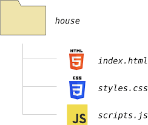
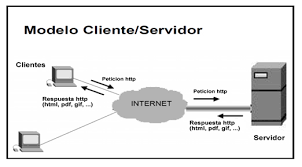
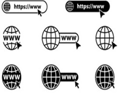

Fundamentos del desarrollo web
El desarrollo web es el proceso de crear y mantener sitios y aplicaciones que funcionan en internet. Abarca desde la estructura básica de una página hasta la implementación de funcionalidades avanzadas que permiten la interacción con los usuarios. Para comprenderlo, es necesario conocer sus fundamentos, que incluyen tecnologías, lenguajes y buenas prácticas. Un primer elemento esencial es el HTML (HyperText Markup Language), que define la estructura de las páginas web. Con HTML se organizan títulos, párrafos, listas, enlaces, imágenes y otros elementos que conforman el contenido. Es el esqueleto sobre el cual se construye todo sitio web. El segundo pilar es el CSS (Cascading Style Sheets), encargado de la presentación visual. Con CSS se definen colores, tipografías, márgenes, alineaciones y diseños responsivos que permiten que un sitio se adapte a diferentes dispositivos. Sin CSS, las páginas serían simples bloques de texto sin atractivo visual. El desarrollo web es el proceso de crear y mantener sitios y aplicaciones en Internet. Para comprenderlo, es necesario conocer los elementos esenciales que hacen posible la web:



1. Qué es Internet y la web
- Internet es una red global de computadoras interconectadas.
- La web es un servicio dentro de Internet que permite acceder a documentos enlazados mediante hipertexto.
- Los navegadores (Chrome, Firefox, Edge) interpretan el código y muestran las páginas al usuario.
2. Modelo cliente-servidor
- El cliente (navegador) solicita información.
- El servidor responde enviando páginas o datos.
- Este intercambio se realiza mediante protocolos como HTTP/HTTPS.
3. Lenguajes básicos
- HTML: estructura del contenido (texto, imágenes, enlaces).
- CSS: estilo y diseño visual (colores, tipografía, disposición).
- JavaScript: interactividad y lógica (formularios dinámicos, animaciones).
4. Estándares web
- Organismos como el W3C definen reglas para que los sitios funcionen en todos los navegadores.
- Seguir estándares asegura accesibilidad y compatibilidad.
5. Entorno de desarrollo
- Se necesitan herramientas como editores de código (VS Code, Sublime Text).
- Conocer el sistema de archivos y la línea de comandos ayuda a organizar proyectos.